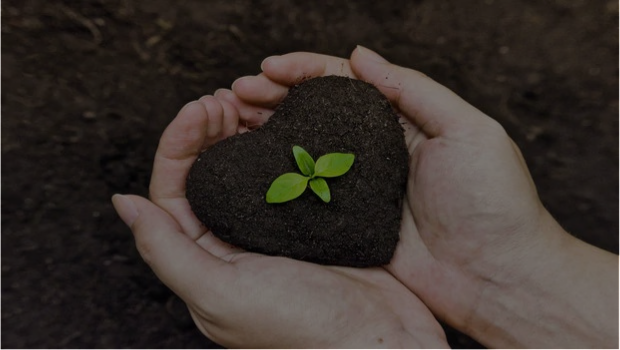
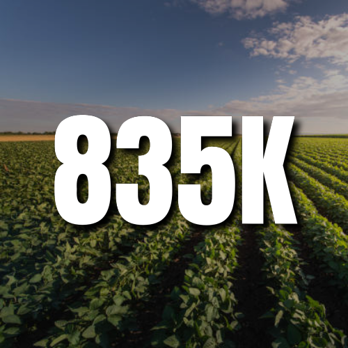
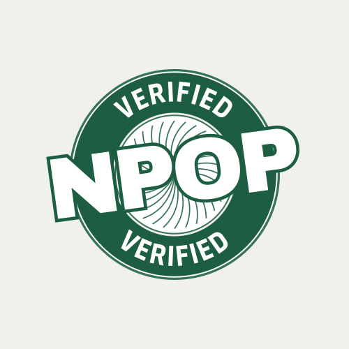
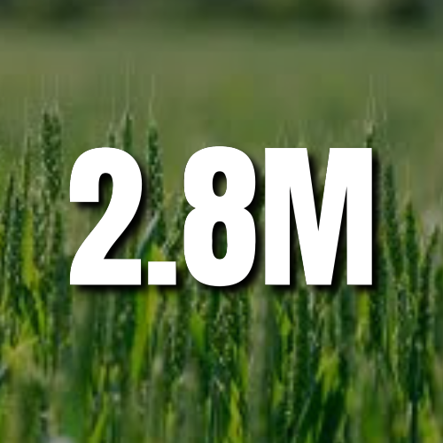
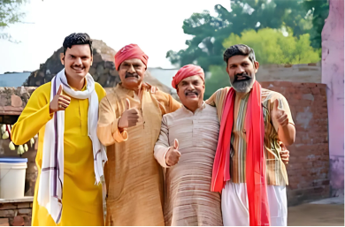
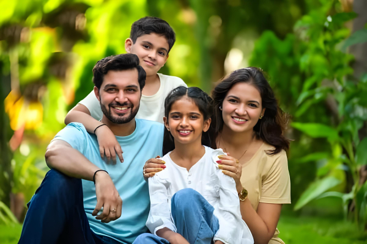

Cultivating Connections: Where natural farmers meet mindful consumers....
Some representative placeholder content for the first slide of the carousel.

Be Organic, Be Healthy, Be You.
Don't view organic food as an expense, view it as an investment in your health..

From Farm to Table, Naturally.
Organic farming relies on natural practices like composting, crop rotation, biological pest control, and green manure. It avoids synthetic fertilizers, pesticides, and GMOs, promoting soil health and environmental sustainability.

DOMINANCE
India has the highest number of organic farmers globally, with 835,000 certified organic producers. Despite this, organic farming in India covers only 2.59% of the total agricultural land, with most farmers cultivating less than two hectares.

CERTIFICATION
Over 1.9 million farmers were registered under organic certification, with a significant portion verified under the NPOP certification system and PGS India, ensuring adherence to national organic standards.

EXPANSION
As of March 2020, India had 2.78 million hectares of land under certified organic farming, accounting for just 2% of the total net sown area (140.1 million hectares).
Boost Your Health and the Planet: Go Organic Today!
Organic food isn't just good for the planet—it's a health game-changer! Packed with more nutrients and free from synthetic chemicals, it's a delicious way to boost your immune system and reduce the risk of diseases. Go organic for a healthier, tastier, and more vibrant life! 🌱🍏

Direct Access for Organic Growers.
A group of small organic farmers in Punjab struggled to sell their produce at fair prices due to middlemen and lack of direct access to consumers. By joining the website, farmers created individual profiles, listed their seasonal produce, and connected with conscious consumers interested in chemical-free food.

Fresh from the Farm, Certified Organic for you.
A growing number of urban consumers wanted organic, locally sourced food but found supermarket options unreliable and overpriced. Through the website, consumers have direct access to farm-fresh fruits and vegetables, sourced directly from nearby organic farmers.
